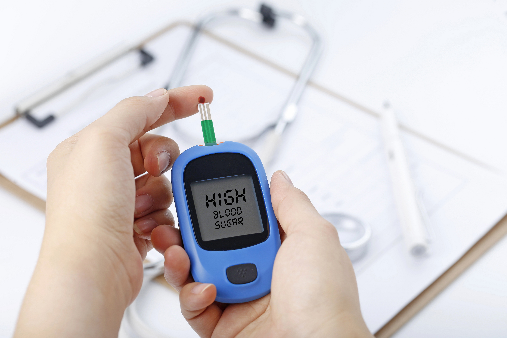

<style>
    .hashtags {
        text-align: center;
        max-width: 800px;
        margin: 20px auto;
        padding: 10px;
    }

    .hashtags a {
        display: inline-block;
        margin: 5px;
        padding: 8px 12px;
        font-size: 0.9rem;
        font-weight: bold;
        text-decoration: none;
        color: #fff;
        background-color: #264653;
        border-radius: 20px;
        transition: background 0.3s ease;
    }

    .hashtags a:hover {
        background-color: #001f3f;
    }

    body {
        font-family: Arial, sans-serif;
        margin: 0;
        padding: 0;
        background-color: #f5f5f5;
        color: #333;
    }

    h2 {
        font-family: "Arial", sans-serif;
        font-size: 2.5rem;
        font-weight: bold;
        color: #001f3f;
        margin-top: 20px;
        text-align: center; /* Center the title */
    }

    p, li {
        font-family: "Arial", sans-serif;
        font-size: 1rem;
        line-height: 1.8;
        text-align: justify;
        margin: 20px auto;
        max-width: 800px;
    }

    .container {
        display: flex;
        flex-direction: column;
        align-items: center;
        padding: 20px;
    }

    img {
        margin: 20px auto;
        border-radius: 8px;
        width: 100%;
        max-width: 800px;
        height: auto;
        box-shadow: 0 4px 8px rgba(0, 0, 0, 0.2);
    }

    .text-muted {
        font-weight: bold;
        color: #264653;
    }

    .references {
        max-width: 800px;
        margin: 20px auto;
    }
</style>

<section id="project-details">
    <div class="container">
        <!-- Page Header -->
        <h2>Can a Diabetes Drug Protect Astronauts from Space-Induced Vision Loss?</h2>

        <!-- First Image and Description -->
          

        <p>
Astronauts on long-duration missions face a serious problem: rising intracranial pressure (ICP) that affects their vision. Spaceflight-Associated Neuro-Ocular Syndrome (SANS) is causing optic disc swelling, globe flattening, and visual impairment—and right now, there’s no proven way to stop it.
        </p>
        <p>
A new NASA-led study is testing an unexpected potential solution: GLP-1 receptor agonists (GLP-1RA)—a drug class commonly used to treat diabetes and metabolic disorders. Researchers from NASA, Baylor College of Medicine, and University of Houston are investigating whether GLP-1RA (Exenatide) can lower ICP and reduce SANS symptoms.        </p>
      <strong>The study involves:</strong>
      <ol>
        <li>30-day strict head-down bed rest to simulate spaceflight effects on the brain and eyes.</li>
        <li>Daily injections of GLP-1RA or placebo, with continuous ICP monitoring and ocular imaging.</li>
        <li>MRI scans to assess brain volume shifts and cerebrospinal fluid regulation.</li>
      </ol> 
      <strong> What this could mean for space and Earth:      </strong>
      <ol>
        <li>A non-invasive pharmacological countermeasure for SANS.</li>
        <li>New treatments for idiopathic intracranial hypertension (IIH) in patients on Earth.</li>
        <li>A step closer to protecting astronaut vision on Moon and Mars missions.</li>
      </ol>
        
      <p>
            Research shows that long-term spaceflight influences not only our neurochemistry but also our <strong>genetic factors</strong>. Stress, microgravity, and radiation can affect gene regulation, potentially altering how the body responds to fatigue, depression, and immune challenges. What might look like a small stressor on Earth can become a major destabilizer in orbit or on Mars.
        </p>

        <strong>Lessons from Michel Siffre’s Cave</strong>
        <p>
Space medicine continues to push boundaries, and discoveries like this could not only safeguard astronauts but also transform neurological treatments here on Earth.        </p>
      

        <!-- Hashtags -->
        <div class="hashtags">
            <a href="https://www.google.com/search?q=SpaceHealth" target="_blank">#SpaceHealth </a>
            <a href="https://www.google.com/search?q=Neuroscience" target="_blank">#Neuroscience</a>
            <a href="https://www.google.com/search?q=AstronautHealth" target="_blank">#AstronautHealth</a>
            <a href="https://www.google.com/search?q=SANS" target="_blank">#SANS</a>
            <a href="https://www.google.com/search?q=VisionInSpace" target="_blank">#VisionInSpace</a>
            <a href="https://www.google.com/search?q=FutureOfAstronauts" target="_blank">#FutureOfAstronauts</a>
            <a href="https://www.google.com/search?q=PsychologicalHealth" target="_blank">#PsychologicalHealth</a>
        </div>

        <!-- References -->
        <div class="references">
            <h3>References</h3>
            <ol>
                <li>Laurie, S.S. et al. Investigation of Intracranial Pressure, GLP1-R Agonist, and SANS during Bed Rest.NASA, Baylor College of Medicine, University of Houston.</li>
            </ol>
        </div>
    </div>
</section>
